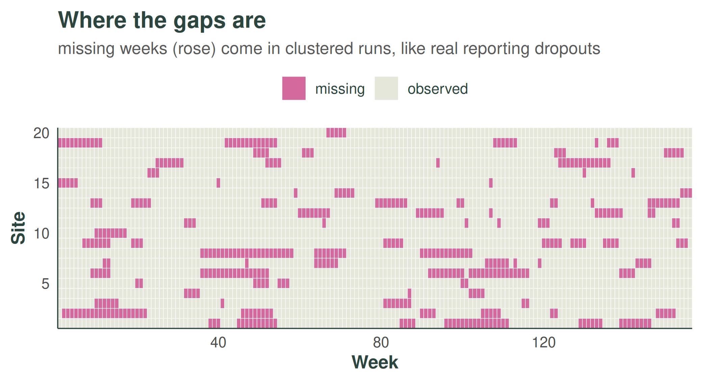
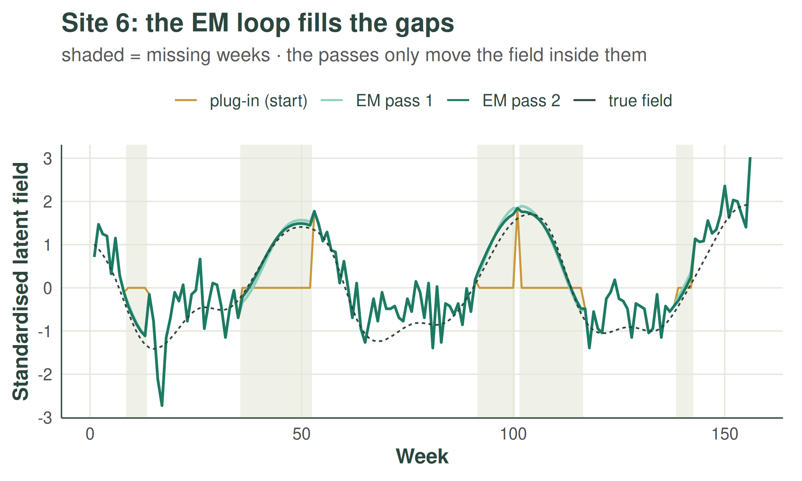

The weave walkthrough: estimating kernels and predicting rates
walkthrough.RmdThis article is a complete walkthrough of how weave
turns noisy, gappy count data into a smooth estimate of an underlying
rate. If the ideas of a Gaussian process and a kernel are new, the
companion gentle
introduction builds them up first; here we apply them. The
walkthrough has three parts:
- The model — what we assume generates the counts, the kernels that encode smoothness, and the simulated data we will use throughout.
- Fitting the kernel hyperparameters — how the parameters that control how quickly counts become uncorrelated in space and time are estimated, including the EM-style handling of missing weeks.
-
From fitted kernels to predictions — the best-guess
rate at every site and week, and an honest prediction
interval around it, with
gp_predict().
We use a small simulated example with a known answer (including known missing weeks), so we can watch the method recover the truth. At each stage we give the maths, a plain-language explanation, and the worked example.
The method is deliberately quick: a fast, deterministic estimate rather than a full Bayesian fit. The approximations that buy that speed are listed honestly at the end.
1. The model
The observation model: counts by site and week
We observe a count y at every site s (a
health facility) and time t (a week), and assume
- is a per-site baseline (some facilities are simply busier).
- is a smooth latent field — the part that varies up and down in space and time.
- and are kernels: they set how correlated two cells are as a function of their separation.
- is the Kronecker product — the full space-time covariance is built from a small spatial kernel and a small temporal kernel (“separable”). This structure is also why everything below is fast: see The Kronecker trick.
The Negative-Binomial assumption is lighter than it looks: it enters only the prediction interval (through the count-noise variance ). The hyperparameter estimates and the predicted rate are built from the Gaussian field on the scale and do not depend on it. With no overdispersion the model reduces to Poisson — the limit , which the dispersion estimate returns automatically when the data show no excess variance.
Each facility has a smooth underlying rate of cases. Nearby facilities, and nearby weeks, tend to look similar; far-apart ones drift. The kernels control how quickly that resemblance fades with distance in space and in time. Our whole task is to read their parameters off the data.
The kernels and their hyperparameters
The spatial kernel is an RBF (squared-exponential) on the distance between sites; the temporal kernel is a periodic kernel (the seasonal cycle) multiplied by a slowly-decaying RBF (the long-run drift). Between them they carry three hyperparameters — the quantities we want to estimate:
-
length_scale— how far apart two sites must be before they stop looking alike (spatial RBF kernel); -
periodic_scale— how sharply the yearly season rises and falls; -
long_term_scale— how slowly the year-on-year level drifts.
A fourth, the nugget ratio, is estimated alongside them: the share of the variance that is observation noise rather than smooth signal. Its role — and why it is a ratio — is explained in part 2, where it enters the model. (For what each kernel looks like and how its parameter changes the curves it generates, see the gentle introduction.)
The worked example: simulated data with missing weeks
We simulate data with chosen true hyperparameters, so we can
check the answer. The small helpers that draw the counts and remove
clustered runs of weeks (simulate_data(),
observed_data()) are example scaffolding, not part of the
package, so they are hidden here.
# example dimensions
n <- 20 # sites (health facilities)
nt <- 52 * 3 # weeks (3 years)
period <- 52 # weeks per seasonal cycle
# the true kernel hyperparameters we will try to recover
true_length_scale <- 2 # spatial smoothness
true_periodic_scale <- 1.1 # how sharp the season is
true_long_term_scale <- 150 # long-run drift
true_r <- 15 # Negative-Binomial dispersion
# site coordinates and per-site baseline log-rate (mu_s)
coordinates <- data.frame(
id = factor(1:n),
lon = runif(n, 0, 5),
lat = runif(n, 0, 5),
mu = log(runif(n, 10, 80))
)
# build the true kernels, draw counts, then hide clustered gaps.
# `obs_data` is all that weave sees: columns id, t, y_obs (NA = missing).
space_k <- space_kernel(coordinates, length_scale = true_length_scale)
time_k <- time_kernel(1:nt, periodic_scale = true_periodic_scale,
long_term_scale = true_long_term_scale, period = period)
true_data <- simulate_data(n, nt, coordinates, space_k, time_k, r = true_r)
obs_data <- observed_data(true_data)
cat(sprintf("%.0f%% of weeks are missing\n", 100 * mean(is.na(obs_data$y_obs))))
#> 14% of weeks are missingTwo things the simulation glosses over for real data. First,
t must be a numeric index whose differences encode
real elapsed time — e.g. weeks since a reference date — and
period must be in those same units; arbitrary indices
(week-of-year that resets, row numbers) silently distort every temporal
length-scale. Second, real data rarely arrives in this shape:
data_process() turns one raw data frame into the
obs_data, coordinates and nt used
below — see Using weave with your
own data.
The gaps are not scattered at random: they arrive in clustered runs, the way real reporting drops out — a facility goes quiet for a stretch, then comes back. Magenta marks the missing weeks:

Here are the first four sites. The deep-green line is the true underlying mean (); grey points are the counts we actually observe; and rose points are the held-out truth at the weeks that went missing — what the model must reconstruct but never gets to see.

2. Fitting the kernel hyperparameters
The estimator is one method with two moving parts, alternated until they agree: a stand-in for the latent field we cannot see (starting from a cheap plug-in, with the model itself progressively refilling the missing weeks), and an exact score — the marginal likelihood — maximised over the hyperparameters given the current stand-in. With no missing data the loop collapses to a single pass; with gaps it is exactly the EM algorithm.
The latent field: a plug-in start, refined by EM
We cannot see the latent field directly, so we build a cheap stand-in from the counts:
that is, take , then for each site subtract that site’s mean and divide by its standard deviation. Weeks with no data enter as the per-site mean — zero after centring — a deliberately neutral starting fill that the EM loop below revisits.
The logarithm turns the multiplicative “rate” scale into an additive one that matches . Subtracting each site’s average removes the baseline (which we do not care about here), and dividing by the spread puts every site on the same footing, so a single set of hyperparameters applies to all of them. It is noisy — but it is instant.
# the plug-in field: per-site centred & scaled log(1 + y), as one long vector
# (length n * nt, with time varying fastest)
g <- build_plugin_field(obs_data, n = n, nt = nt)
str(g)
#> num [1:3120] 1.008 1.094 1.391 1.692 0.603 ...On the observed weeks, the plug-in field tracks the true latent field
with observation noise layered on top. On the missing weeks it
is flat and zero — every gap looks like a stretch where the signal died,
and left alone that biases the length-scales downward (the seasonal and
long-run scales suffer most). Setting refine = TRUE treats
the plug-in field as just the starting point of an EM loop:
This loop is exactly the EM algorithm for a fit with missing data, alternating two steps (the plug-in field with its neutral fill is iteration zero):
-
E-step. With the current hyperparameters, replace
each missing week by its expected value under the model — the GP
conditional mean given the weeks we did
observe (the same conditional-mean solve
gp_predict()performs; “kriging”, in geostatistics jargon). - M-step. Treat that completed grid as if it were fully observed and re-maximise the marginal likelihood — the score defined in the next subsection — to get updated hyperparameters.
Each pass feeds the next, and two or three are enough to converge — landing on essentially the estimate we would have got with no gaps at all. Crucially, the expensive conditional-mean solve runs only once per pass, never inside the optimiser, so the whole correction stays cheap. (It removes the bias the gaps cause; the residual plug-in attenuation listed in the caveats — from conditioning on a noisy field rather than integrating it out — is a separate matter it does not fix.)
The loop at work, on the site with the most missing weeks (gaps shaded). The plug-in start is flat at zero in every gap; the first EM pass replaces those stretches with the GP conditional mean; the second pass barely moves it — the loop has converged. The observed weeks never change, only the gaps:

Scoring candidate hyperparameters: the marginal likelihood
For a candidate set of hyperparameters the kernels give a covariance . We add a nugget — a noise term — and a global variance :
where are correlation kernels (unit diagonal). The nugget is expressed as a ratio because the global variance multiplies the whole covariance — signal and noise alike — so only the noise-to-signal ratio is separately identifiable; the absolute noise variance is recovered afterwards as . Writing for this whole covariance and for the number of cells, the score for is the log marginal likelihood
We pick the that maximises this. The variance has a closed-form optimum, so we “profile” it out and never search over it.
Strictly, the score also includes weakly informative log-normal
priors on the four parameters (default_kernel_priors()), so
the estimate is a MAP rather than a pure maximum likelihood — mild
regularisation that keeps weakly identified parameters (notably
long_term_scale) off the boundary.
For any candidate hyperparameters we can ask: how plausible is the plug-in field if the world really had this much smoothness? The first term () penalises over-flexible kernels (an “Occam” penalty); the second rewards kernels that explain the field well. We adjust the hyperparameters until the score is best.
The nugget is the important addition: a slice of pure noise the model may attribute to observation error rather than signal. Without it the kernel would have to explain the noisy plug-in field with smoothness alone, badly distorting the length-scales. (The nugget and the Negative-Binomial dispersion of part 3 are two views of the same count scatter — see The nugget and the dispersion.)
Evaluating and sounds hopeless, for two compounding reasons. First, has one row and one column per site-week cell — 3120 × 3120 even in this small example, and around 260,000 × 260,000 (68 billion entries) at a realistic 1000 sites × five years — and determinants and inverses cost : work that grows with the cube of the cell count. Second, this is the inner loop — the optimiser needs the score at every candidate it tries, typically hundreds of evaluations. Because the kernel is separable, both quantities instead come exactly from eigendecompositions of the two small kernels, at cost instead of . How that works is its own short story: see The Kronecker trick.
The worked example: fit and check
infer_kernel_params() does all of the above: build the
plug-in field, then maximise the score over the three length-scales plus
the nugget ratio, with refine = TRUE switched on because
our data has gaps.
# maximise the GP marginal likelihood to recover the three length-scales
# (plus a noise/nugget ratio); the global variance sigma^2 is profiled out.
# refine = TRUE fills the gaps with the GP conditional mean and refits, removing
# the bias that mean-imputing the missing weeks would otherwise introduce.
est <- infer_kernel_params(obs_data, coordinates, nt = nt, period = period,
refine = TRUE)
# did we recover the hyperparameters we simulated from?
data.frame(
parameter = c("length_scale", "periodic_scale", "long_term_scale"),
truth = c(true_length_scale, true_periodic_scale, true_long_term_scale),
estimate = round(c(est$length_scale, est$periodic_scale, est$long_term_scale), 2)
)
#> parameter truth estimate
#> 1 length_scale 2.0 1.69
#> 2 periodic_scale 1.1 1.04
#> 3 long_term_scale 150.0 127.40
# the other two pieces estimation returns: the nugget and the profiled variance
cat(sprintf("nugget ratio (noise/signal) = %.2f; profiled sigma^2 = %.2f\n",
est$nugget_ratio, est$sigma2))
#> nugget ratio (noise/signal) = 0.17; profiled sigma^2 = 1.11
# est also carries the maximised score and the optimiser's convergence code
cat(sprintf("log posterior = %.1f; convergence = %d (0 = success)\n",
est$log_posterior, est$convergence))
#> log posterior = -2111.5; convergence = 0 (0 = success)At scale. Estimation cost grows as
.
For very large site counts, n_sites fits the
hyperparameters on a random site subsample — they are shared,
population-level quantities, so a representative subsample estimates the
same values at a fraction of the cost (set a seed for reproducibility;
time points are never subsampled). Prediction cost is dominated by the
interval draws, which parallelise — see Running predictions in parallel.
The clearest check is to draw the fitted kernels (teal) on top of the true ones (deep green, dashed). If the method worked, they overlap.


3. From fitted kernels to predictions
With the kernels estimated, we put them to work: clean up the noise,
fill in the missing weeks, and say how uncertain each estimate
is. A single function, gp_predict(), does both of the
pieces below in one call.
The best guess: the posterior mean
gp_predict() conditions a separable Gaussian process on
the observed cells only. The posterior
mean of the latent field comes from one matrix-free
conjugate-gradient solve (cheap because multiplying by
never forms it — see The Kronecker
trick),
where simply picks out the observed cells and is the observation-noise variance implied by the fitted nugget ratio. The mean is smooth and deterministic — it does not depend on how many draws are used for the interval.
Because it conditions on the observed set, missing weeks are filled by genuine GP interpolation — the model’s best guess given every week it did see, weighted by the fitted correlations — unlike a smoother that quietly mean-imputes the gaps.
The interval: exact variance plus a “gaps” correction
The posterior variance splits into two parts:
If no weeks were missing, the posterior variance has an exact closed-form answer through the same Kronecker eigendecomposition used for fitting — no simulation needed. Missing weeks change that answer only near the gaps, so the draws are spent purely on the correction . Each perturbation draw (Papandreou & Yuille 2010) draws and and forms
which has exactly the posterior covariance of the field. It is paired with an exact complete-grid twin built from the same , and the average of estimates the correction. Sharing the randomness makes the difference nearly noise-free — a control variate. The latent-rate posterior is then combined with Negative-Binomial observation noise, via the law of total variance, to give the count mean and variance
and the 95% interval comes from a lognormal moment-match to that mean and variance:
with the interval given by the 2.5% and 97.5% quantiles of .
The variance trick is worth restating in plain words. Most of the uncertainty is known exactly — the only thing simulation must measure is how much the gaps inflate it. So instead of asking the draws to estimate the whole variance (the old way, which needs hundreds of draws to average away the noise), each draw is compared against an exact “what if nothing were missing” twin that shares its random numbers. Almost all the randomness cancels in the comparison — like judging a diet by weighing the same person before and after, rather than comparing two different people. The result: weeks far from any gap get an essentially exact interval, and a handful of draws does the work that hundreds used to.
A future count is uncertain for two reasons: we are unsure of the underlying rate, and counts scatter around any given rate. An honest interval includes both. The dispersion — how overdispersed the counts are — is the one quantity this quick method does not estimate from the likelihood, so it is recovered by method of moments from the observed counts. (If it seems the observation noise has now been modelled twice — once as the nugget, once as — it has not: the two feed different terms of the variance above. The short companion note The nugget and the dispersion explains how they relate.)
The worked example: predict, then check the coverage
The call returns one row per site-week with the posterior
rate and, because n_draws >= 1, a 95%
interval (lower, upper). The dispersion
r used is attached as an attribute.
# condition the GP on the observed cells and predict every site-week.
# n_draws controls the paired draws that estimate the gap correction to the
# variance -- the rest of the interval width is computed exactly, so modest
# values are plenty.
pred <- gp_predict(obs_data, coordinates, hyperparameters = est,
nt = nt, period = period, n_draws = 100)
head(pred) # one row per cell: id, t, rate, and the 95% interval
#> id t rate lower upper
#> 1 1 1 21.33600 9.960872 40.70560
#> 2 1 2 19.68996 9.152957 37.59182
#> 3 1 3 17.55220 8.058275 33.74290
#> 4 1 4 15.13835 6.799116 29.51191
#> 5 1 5 12.70435 5.525043 25.29903
#> 6 1 6 10.47211 4.366146 21.44362
attr(pred, "r") # the NB dispersion used for the interval (estimated)
#> [1] 13.02461The teal line is the predicted mean rate and the teal band the 95% prediction interval. It should track the deep-green true-mean line and cover the points — including the rose held-out weeks it never saw.

At scale, the draws behind the interval can run across CPU cores: see the short companion article Running predictions in parallel — one line of setup, and the numbers are guaranteed not to change.
The honest test is the held-out weeks: does the 95% interval contain the counts the model never saw? It should, about 95% of the time.
# keep only the held-out weeks (those the model never saw), with the true rate
held_out <- merge(df_miss[, c("id", "t", "lambda", "y")], pred_df,
by = c("id", "t"))
# coverage: fraction of held-out counts inside the 95% interval (target ~0.95)
mean(held_out$y >= held_out$lower & held_out$y <= held_out$upper)
#> [1] 0.9223947
# how well the predicted rate tracks the true rate at those weeks
cor(held_out$rate, held_out$lambda)
#> [1] 0.989185If the coverage lands near 95% the bands are honest; if the predicted rate correlates strongly with the true rate, the gap-filling is doing its job. Both can drift a little here because this is a small example and the quick method does not propagate every source of uncertainty (see below).
Caveats and approximations
This is a fast, deterministic estimate — not a full posterior. The shortcuts that make it quick also limit it:
-
Plug-in, not Bayesian. A full Bayesian treatment
would average the score over every latent field consistent with the
counts; we condition on a single noisy estimate instead and treat it as
data. Because that estimate carries observation noise, some of the noise
gets read as real short-range structure, which attenuates the
length-scales (
periodic_scaleandlong_term_scaletend to come out a little low). The nugget absorbs most of this — it gives the noise somewhere else to go — but not all of it. -
log(1 + y)is a crude stand-in for the latent log-rate. It is poorest at very low counts, where the+1dominates (the step from 0 to 1 case is huge on this scale) and where Poisson-level noise is strongly asymmetric after the log — so sites with sparse counts contribute a distorted signal. - Per-site scaling puts every site on the same footing so one global can serve them all — but the scale factor is itself estimated from that site’s data, noisily when a site has few observed weeks, and a site whose true variability differs from the rest is forced to look the same.
- One homoscedastic nugget. Real count noise is heteroscedastic — a high-count week is noisier in absolute terms than a low-count one — but the model summarises all of it with the single ratio . The effect is mild over-smoothing where counts are high and under-smoothing where they are low.
-
Missing cells. With
refine = TRUE(used above) the fit fills the gaps with the GP conditional mean and refits, so missingness no longer biases the length-scales; the defaultrefine = FALSEmean-imputes the gaps and is faster but attenuated. (gp_predict()always conditions on the observed cells only, so its interval widens over gaps either way.) - The dispersion is recovered by a rough method of moments rather than estimated in the likelihood, and moment estimators are sensitive to outliers and to misfit in the mean. Errors in change the width of the count prediction interval (too-small widens it, too-large narrows it), not the predicted rate.
- A point estimate. We report the maximiser, with no uncertainty on the hyperparameters themselves — the prediction interval treats them as known. With plenty of sites and weeks this matters little (the hyperparameters are well pinned down); with short series or few sites the interval is somewhat narrower than it should be.
For a quick, honest summary of the spatial and temporal correlation structure — or a sensible starting point for a fuller model — it does the job in about a second.